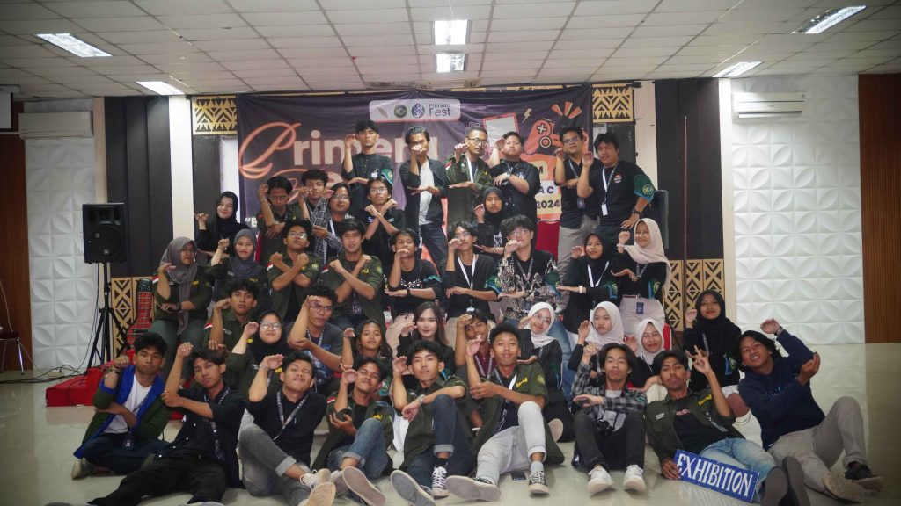

PRIMERA Fest 2024 : Ketika Seni Berkolaborasi dengan Teknologi
Tanggal : 9 Desember 2024
Himpunan Mahasiswa Informatika (HMIF) ITERA bekerja sama dengan Program Studi Teknik Informatika ITERA sukses menggelar PRIMERA Fest 2024, sebuah acara yang memadukan seni dan teknologi. Berlangsung pada hari Rabu, acara ini menghadirkan berbagai kegiatan menarik, termasuk Game Expo dan pertunjukan seni, yang menarik lebih dari 200 pengunjung dari berbagai latar belakang.
Mengusung nama yang berasal dari gabungan kata primer (satu) dan chimera (beragam), PRIMERA Fest menggambarkan keberagaman yang bersatu. Acara ini diinisiasi oleh divisi Seni dan Olahraga HMIF ITERA, khususnya departemen Pengembangan Sumber Daya Anggota (PSDA). Ketua pelaksana, Abraham Ganda atau akrab disapa Bram, menjelaskan bahwa tujuan acara ini adalah menciptakan ruang relaksasi bagi mahasiswa yang sering kali merasa tertekan oleh rutinitas perkuliahan.
“PRIMERA Fest dirancang untuk menggabungkan seni dan teknologi, menciptakan pengalaman yang tidak hanya menghibur tetapi juga menginspirasi,” ungkap Bram.
Game Expo menjadi salah satu sorotan utama dalam PRIMERA Fest dengan tema “Explore The World Through The Game.” Pameran ini menampilkan karya mahasiswa Teknik Informatika dari mata kuliah Teknologi Game.
Menurut Radhinka Bagaskara, S.Si.Kom., M.Si., M.Sc., dosen Teknik Informatika, Game Expo merupakan platform untuk memperkenalkan hasil tugas besar mahasiswa kepada khalayak umum. “Kami berharap, karya-karya ini tidak hanya berhenti di tingkat mata kuliah tetapi dapat dikembangkan menjadi game profesional yang dirilis ke pasar internasional,” ujar Radhinka.
Game Expo juga mendapat dukungan dari berbagai komunitas dan lembaga seperti Komunitas e-Sport Bandar Lampung, Eternal Dream Studio, dan Perwakilan Program Studi Pendidikan Teknologi Informasi UNILA. Kehadiran tamu istimewa dari Bappeda Provinsi Lampung turut memberikan wawasan mengenai potensi game sebagai industri kreatif di masa depan.
Selain teknologi, PRIMERA Fest juga diramaikan oleh berbagai pertunjukan seni seperti penampilan band, live music, dance, dan seni pertunjukan lainnya. Penampilan ini melibatkan mahasiswa dari berbagai angkatan, memberikan mereka ruang untuk mengekspresikan bakat seni mereka.